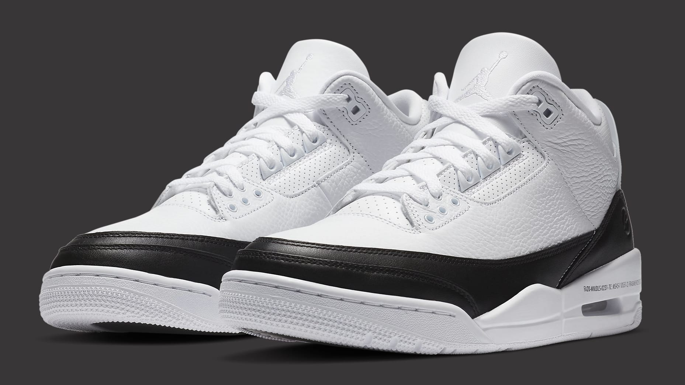

Air Jordan 3 x Fragment
Blanco
El autodenominado "DJ cultural" Hiroshi Fujiwara ha recibido muchos créditos, incluido el papel fundamental que desempeñó en el inicio y la definición de la moda urbana como se la conoce hoy. Pero sigue ganando reconocimiento, y esta última colaboración representa el segundo capítulo de su trabajo con la marca Jordan después de su codiciada colaboración con AJ1 en 2014.
Junto con otras dos piezas de calzado y una colección de ropa, este AJ3 completa la colaboración Fragment x Jordan aplicando la atención al detalle de Fujiwara a uno de los estilos de Jordan más queridos. El patrón de color "orca" en blanco y negro juega con su trabajo anterior de Nike, mientras que un SKU completamente escrito en la entresuela establece una conexión entre el arte y el negocio de la moda urbana. Un logotipo Fragment estampado aparece sobre la entresuela y nuevamente debajo de un logotipo Jordan translúcido en el talón para crear una impresión elegante, pero sutil.
Para comprar da click aqui